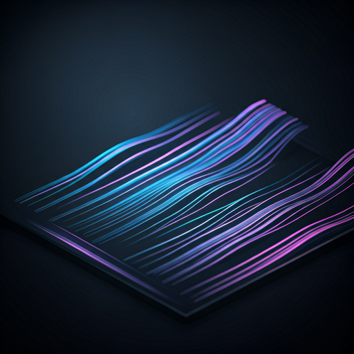
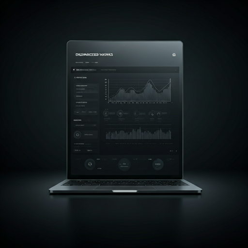
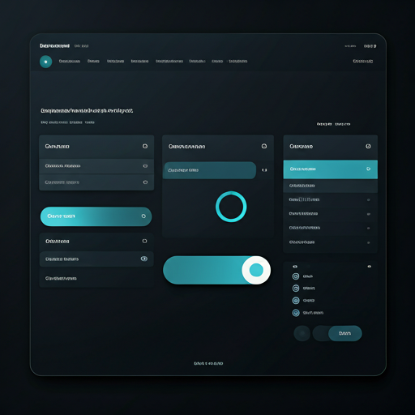
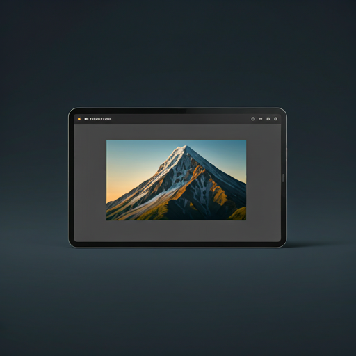
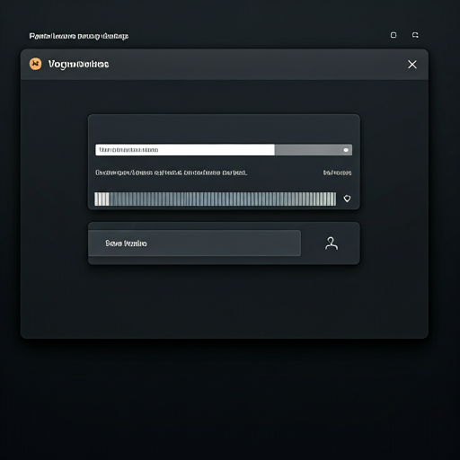
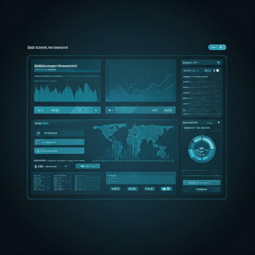

Luxe3D — Quantum One Showcase
view_in_arHigh-performance interactive 3D product showcase featuring PBR materials and cinematic post-processing.
Network Analysis Dashboard
hubInteractive topology engine with Sigma.js for dynamic relationship filtering.

Traffic Analytics Dashboard
monitoringReal-time monitoring utilizing amCharts with highly optimized rendering cycles.

Domain Management System
dnsComplex enterprise workflows powered by NgRx for robust state management.

Responsive Enterprise Dashboard
aspect_ratioMulti-resolution layout optimization specifically engineered for 1080p up to 4K displays.

SVG Convert — Figma Plugin
drawProfessional-grade vectorization tool utilizing ImageTracerJS. Features real-time tracing, background removal, and a custom dark-themed UI.

Multi-Source Video Downloader
downloadHigh-performance media tool utilizing Node.js streams for zero-disk-space extraction from YouTube, Spotify, and Twitter. Features a decoupled architecture with Framer Motion animations.

Gov-Secure Portals
admin_panel_settingsHigh-security cyber-related dashboards developed for central government agencies with zero-trust architecture.